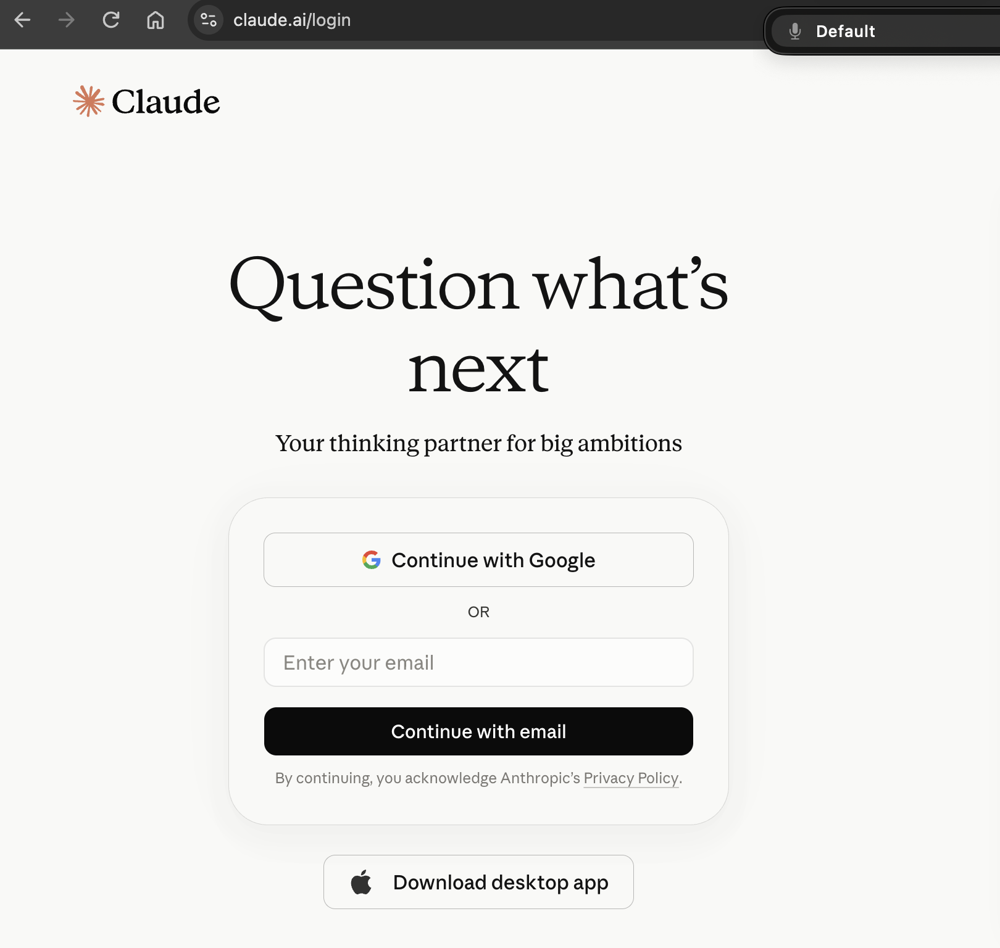

Claude.ai · кнопка за кнопкой
Как подключить Claude из России
Путь от проверки подключения до первого открытого чата. На каждом этапе показано, какой экран появится и что выбрать
Эта инструкция относится к работе в чате Claude.ai. Платные подписки здесь не рассматриваются
В инструкции показан рекомендуемый вариант регистрации и входа через Google-аккаунт с почтой Gmail. Anthropic также описывает вход по email, но этот маршрут здесь не разбираем
До открытия Claude
Что подготовить
Для рекомендуемого маршрута понадобятся три вещи
- При необходимости - VPN для своей сети и локация из списка доступности Anthropic
- Google-аккаунт с Gmail для рекомендуемого в этой инструкции способа входа
- Для нового аккаунта - телефонный номер из поддерживаемой локации, который принимает SMS
Шаг 1
Проверить VPN
Выбери страну и сохрани IP
Проверь список поддерживаемых локаций Anthropic. Эта инструкция рассчитана на ситуацию, когда ты находишься в поддерживаемой локации
Открой 2ip.ru и сохрани показанный IP-адрес. Через день снова подключись к той же локации VPN и сравни цифры. Если адрес изменился, VPN использует динамический IP
Изменение IP не означает автоматическую блокировку Claude. Сохранённый адрес нужен для диагностики, если при следующем входе появится ошибка
Результат: ты проверил доступность локации и знаешь, постоянный или динамический IP выдаёт твой VPN
Шаг 2
Подготовить Google-аккаунт
Google-аккаунт уже есть
Использовать существующий аккаунт
Открой Gmail и проверь вход. Если ты помнишь пароль и вход работает, этот аккаунт можно использовать для входа в Claude.ai
Google-аккаунта нет
Сначала создать аккаунт
Создай Google-аккаунт по инструкции Google. Для Claude подойдёт вход через Google, но отдельный Google-аккаунт не является требованием Anthropic
Если Gmail уже есть
Открой Gmail в отдельной вкладке. Если ты помнишь пароль и вход работает, этот аккаунт можно использовать для входа в Claude.ai через кнопку Continue with Google. Новый аккаунт создавать не нужно
Если Google-аккаунта нет
Не выключая VPN, открой страницу создания Google-аккаунта. Выбери Создать аккаунт → Для личного использования
Заполни имя и дату рождения, придумай адрес Gmail и пароль. Если Google запросит телефон, используй номер, к которому у тебя есть долгосрочный доступ
Полностью закончи регистрацию Google и открой Gmail. После этого переходи в Claude
Результат: почта Gmail открывается, можно выбрать её на экране входа Claude
Шаг 3
Открыть Claude и войти через Google
Открой адрес claude.ai
Введи в адресную строку браузера claude.ai и нажми Enter. На экране входа нажми Continue with Google, выбери подготовленный аккаунт и подтверди вход

- 1 Адрес claude.ai/login
- 2 Кнопка Continue with Google
Результат: для нового аккаунта Claude открывает проверку номера. Для существующего аккаунта ты входишь и переходишь к первому чату
Шаг 4
Подтвердить телефонный номер для нового аккаунта
Пройди проверку номера
При создании нового аккаунта Anthropic просит номер из поддерживаемой локации. Введи номер на экране проверки, дождись SMS с шестизначным кодом, введи его в поле и нажми Verify code
Официальная справка Anthropic не принимает VoIP, Google Voice, номера из приложений, стационарные номера и другие номера без SMS. Выбирай номер, к которому сохранишь долгосрочный доступ
Результат: код принят, создание аккаунта завершено и Claude открывает новый чат
Если код не пришёл или не подошёл
Подожди несколько минут. Если прошло больше пяти минут, нажми Try again, заново введи номер и запроси новый код. Если на экране остаётся ошибка, Anthropic советует использовать другой номер
Результат: для проверки введён самый свежий код или выбран другой подходящий номер
Шаг 5
Проверить первый чат
Отправь короткое сообщение
Напиши в новом чате короткий вопрос. Если Claude отвечает, вход завершён
Теперь настрой имя, инструкции и память в статье «Как рассказать Claude о себе». Это избавит от повторного объяснения контекста в каждом новом чате
На следующий вход: открой claude.ai и используй тот же способ входа
Если возникла ошибка
Что проверить, если вход не получился
Claude пишет, что сервис недоступен в регионе
Проверь список поддерживаемых локаций Anthropic. Если ты находишься в поддерживаемой локации, повтори вход и обратись в поддержку Anthropic при сохранении ошибки
Google предлагает российскую локацию
Это вопрос к регистрации Google, а не правило Anthropic. Заверши или исправь регистрацию по подсказкам Google, затем вернись к входу в Claude
Номер не принимается
Для нового аккаунта нужен номер из поддерживаемой локации, который принимает SMS. VoIP, Google Voice, номера из приложений и стационарные номера не подходят
Код не приходит
Если прошло больше пяти минут, нажми Try again, заново введи номер и запроси новый код. Если ошибка сохраняется, используй другой подходящий номер
После входа снова открывается стартовый экран
Войди тем же способом ещё раз. Если ошибка сохраняется, используй официальный раздел поддержки Anthropic
Финальная проверка
Что проверить перед первым сообщением
Подключение подготовлено
- VPN включён, выбрана поддерживаемая страна
- При необходимости IP сохранён для собственной диагностики
- Google-аккаунт с Gmail открывается, и ты помнишь пароль
- Для нового аккаунта: есть номер из поддерживаемой локации, который принимает SMS
- Открыт адрес claude.ai, а не Claude Code
После первого чата перейди к настройке Claude под себя: там добавишь имя, инструкции и память
Проверено 8 сентября 2026
Источники
Следующий шаг
От чата Claude.ai к Claude Code
Работа в чате Claude.ai - первый шаг, чтобы познакомиться с Claude и понять, что ты можешь ему поручить. В бесплатном ИИ-Лагере ты пойдёшь дальше: установишь Claude Code, начнёшь управлять им командами на русском языке и соберёшь своими руками то, что нужно твоему делу
Перейти в ИИ-Лагерь